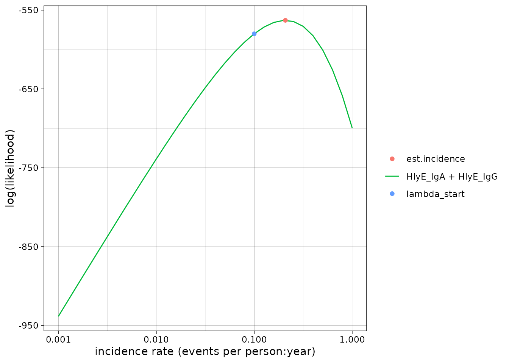
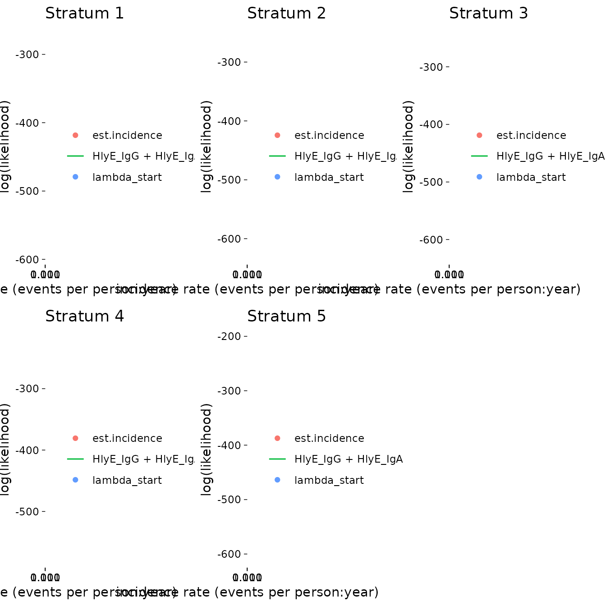

Generate a simulated cross-sectional sample and estimate seroincidence
Enteric Fever using HlyE IgG and/or HlyE IgA
Source:vignettes/articles/simulate_xsectionalData.Rmd
simulate_xsectionalData.RmdThis vignette shows how to simulate a cross-sectional sample of
seroresponses for incident infections as a Poisson process with
frequency lambda. Responses are generated for the
antibodies given in the antigen_isos argument.
Age range of the simulated cross-sectional record is
lifespan.
The size of the sample is nrep.
Each individual is simulated separately, but different antibodies are modelled jointly.
Longitudinal parameters are calculated for an age:
age.fx (fixed age). However, when age.fx is
set to NA then the age at infection is used.
The boolean renew.params determines whether each
infection uses a new set of longitudinal parameters, sampled at random
from the posterior predictive output of the longitudinal model. If set
to FALSE, a parameter set is chosen at birth and kept,
but:
the baseline antibody levels (
y0) are updated with the simulated level (just) prior to infection, andwhen
is.na(age.fx)then the selected parameter sample is updated for the age when infection occurs.
There is also a variable n.mc: when n.mc==0
then a random MC sample is chosen out of the posterior set (1:4000).
When n.mc is given a value in 1:4000 then the chosen number
is fixed and reused in any subsequent infection. This is for diagnostic
purposes.
Simulate a single dataset
load model parameters
Here we load in longitudinal parameters; these are modeled from all SEES cases across all ages and countries:
library(serocalculator)
library(tidyverse)
#> ── Attaching core tidyverse packages ──────────────────────── tidyverse 2.0.0 ──
#> ✔ dplyr 1.1.4 ✔ readr 2.1.5
#> ✔ forcats 1.0.0 ✔ stringr 1.5.1
#> ✔ ggplot2 3.5.1 ✔ tibble 3.2.1
#> ✔ lubridate 1.9.4 ✔ tidyr 1.3.1
#> ✔ purrr 1.0.2
#> ── Conflicts ────────────────────────────────────────── tidyverse_conflicts() ──
#> ✖ dplyr::filter() masks stats::filter()
#> ✖ dplyr::lag() masks stats::lag()
#> ℹ Use the conflicted package (<http://conflicted.r-lib.org/>) to force all conflicts to become errors
library(ggbeeswarm) # for plotting
library(dplyr)
dmcmc <-
"https://osf.io/download/rtw5k" %>%
load_curve_params() %>%
dplyr::filter(iter < 500) # reduce number of mcmc samples for speedvisualize antibody decay model
We can graph individual MCMC samples from the posterior distribution
of model parameters using a autoplot.curve_params() method
for the autoplot() function:

We can use a logarithmic scale for the x-axis if desired:

We can graph the median, 10%, and 90% quantiles of the model using
the graph.curve.params() function:
# Specify the antibody-isotype responses to include in analyses
antibodies <- c("HlyE_IgA", "HlyE_IgG")
dmcmc %>%
graph.curve.params(antigen_isos = antibodies) %>%
print()
#> Warning: Removed 47 rows containing missing values or values outside the scale range
#> (`geom_line()`).
Simulate cross-sectional data
# set seed to reproduce results
set.seed(54321)
# simulated incidence rate per person-year
lambda <- 0.2
# range covered in simulations
lifespan <- c(0, 10)
# cross-sectional sample size
nrep <- 100
# biologic noise distribution
dlims <- rbind(
"HlyE_IgA" = c(min = 0, max = 0.5),
"HlyE_IgG" = c(min = 0, max = 0.5)
)
# generate cross-sectional data
csdata <- sim.cs(
curve_params = dmcmc,
lambda = lambda,
n.smpl = nrep,
age.rng = lifespan,
antigen_isos = antibodies,
n.mc = 0,
renew.params = TRUE,
add.noise = TRUE,
noise_limits = dlims,
format = "long"
)Noise parameters
We need to provide noise parameters for the analysis; here, we define them directly in our code:
Visualize data
We can plot the distribution of the antibody responses in the simulated data.
ggplot(csdata, aes(
x = as.factor(antigen_iso),
y = value
)) +
geom_beeswarm(
size = .2,
alpha = .3,
aes(color = antigen_iso),
show.legend = FALSE
) +
geom_boxplot(outlier.colour = NA, fill = NA) +
scale_y_log10() +
theme_linedraw() +
labs(x = "antigen - isotype")
calculate log-likelihood
We can calculate the log-likelihood of the data as a function of the incidence rate directly:
ll_a <-
log_likelihood(
pop_data = csdata,
curve_params = dmcmc,
noise_params = cond,
antigen_isos = "HlyE_IgA",
lambda = 0.1
) %>%
print()
#> [1] -240.1535
ll_g <-
log_likelihood(
pop_data = csdata,
curve_params = dmcmc,
noise_params = cond,
antigen_isos = "HlyE_IgG",
lambda = 0.1
) %>%
print()
#> [1] -339.8803
ll_ag <-
log_likelihood(
pop_data = csdata,
curve_params = dmcmc,
noise_params = cond,
antigen_isos = c("HlyE_IgG", "HlyE_IgA"),
lambda = 0.1
) %>%
print()
#> [1] -580.0338
print(ll_a + ll_g)
#> [1] -580.0338graph log-likelihood
We can also graph the log-likelihoods, even without finding the MLEs,
using graph_loglik():
lik_HlyE_IgA <-
graph_loglik(
pop_data = csdata,
curve_params = dmcmc,
noise_params = cond,
antigen_isos = "HlyE_IgA",
log_x = TRUE
)
lik_HlyE_IgG <- graph_loglik(
previous_plot = lik_HlyE_IgA,
pop_data = csdata,
curve_params = dmcmc,
noise_params = cond,
antigen_isos = "HlyE_IgG",
log_x = TRUE
)
lik_both <- graph_loglik(
previous_plot = lik_HlyE_IgG,
pop_data = csdata,
curve_params = dmcmc,
noise_params = cond,
antigen_isos = c("HlyE_IgG", "HlyE_IgA"),
log_x = TRUE
)
print(lik_both)
estimate incidence
We can estimate incidence with est.incidence():
est1 <- est.incidence(
pop_data = csdata,
curve_params = dmcmc,
noise_params = cond,
lambda_start = .1,
build_graph = TRUE,
verbose = TRUE, # print updates as the function runs
print_graph = FALSE, # display the log-likelihood curve while
#`est.incidence()` is running
antigen_isos = antibodies
)
#> nrow(curve_params) = 998
#> Initial negative log-likelihood: 580.033839865286
#> building likelihood graph
#> about to call `nlm()`
#> iteration = 0
#> Step:
#> [1] 0
#> Parameter:
#> [1] -2.302585
#> Function Value
#> [1] 580.0338
#> Gradient:
#> [1] -43.94475
#>
#> iteration = 1
#> Step:
#> [1] 0.4684939
#> Parameter:
#> [1] -1.834091
#> Function Value
#> [1] 565.4921
#> Gradient:
#> [1] -18.4184
#>
#> iteration = 2
#> Step:
#> [1] 0.3380391
#> Parameter:
#> [1] -1.496052
#> Function Value
#> [1] 563.1786
#> Gradient:
#> [1] 6.088605
#>
#> iteration = 3
#> Step:
#> [1] -0.08398361
#> Parameter:
#> [1] -1.580036
#> Function Value
#> [1] 562.9676
#> Gradient:
#> [1] -0.665958
#>
#> iteration = 4
#> Step:
#> [1] 0.008280263
#> Parameter:
#> [1] -1.571755
#> Function Value
#> [1] 562.9636
#> Gradient:
#> [1] -0.9964423
#>
#> iteration = 5
#> Step:
#> [1] 0.002099482
#> Parameter:
#> [1] -1.569656
#> Function Value
#> [1] 562.9634
#> Gradient:
#> [1] 1.11877
#>
#> iteration = 6
#> Step:
#> [1] -1.66162e-05
#> Parameter:
#> [1] -1.569673
#> Function Value
#> [1] 562.9634
#> Gradient:
#> [1] 0.1425471
#>
#> iteration = 7
#> Parameter:
#> [1] -1.569673
#> Function Value
#> [1] 562.9634
#> Gradient:
#> [1] -0.008628721
#>
#> Last global step failed to locate a point lower than x.
#> Either x is an approximate local minimum of the function,
#> the function is too non-linear for this algorithm,
#> or steptol is too large.
#> Warning in est.incidence(pop_data = csdata, curve_params = dmcmc, noise_params = cond, : `nlm()` may not have reached the maximum likelihood estimate.
#> `nlm()` completed with the following convergence code:
#> 3: Last global step failed to locate a point lower than x. Either x is an approximate local minimum of the function, the function is too non-linear for this algorithm, or `stepmin` in `est.incidence()` (a.k.a. `steptol` in `nlm()`) is too large.
#>
#> Elapsed time:
#> user system elapsed
#> 0.429 0.000 0.430We can extract summary statistics with summary():
summary(est1)
#> # A tibble: 1 × 10
#> est.start incidence.rate SE CI.lwr CI.upr coverage log.lik iterations
#> <dbl> <dbl> <dbl> <dbl> <dbl> <dbl> <dbl> <int>
#> 1 0.1 0.208 0.0137 0.183 0.237 0.95 -563. 7
#> # ℹ 2 more variables: antigen.isos <chr>, nlm.convergence.code <ord>We can plot the log-likelihood curve with
autoplot():
autoplot(est1)
We can set the x-axis to a logarithmic scale:
autoplot(est1, log_x = TRUE)
Simulate multiple clusters with different lambdas
library(parallel)
n_cores <- max(1, parallel::detectCores() - 1)
print(n_cores)
#> [1] 3In the preceding code chunk, we have determined that we can use 3 CPU cores to run computations in parallel.
# number of clusters
nclus <- 10
# cross-sectional sample size
nrep <- 100
# incidence rate in e
lambdas <- c(.05, .1, .15, .2)
sim_df <-
sim.cs.multi(
n_cores = n_cores,
lambdas = lambdas,
nclus = nclus,
n.smpl = nrep,
age.rng = lifespan,
antigen_isos = antibodies,
renew.params = TRUE,
add.noise = TRUE,
curve_params = dmcmc,
noise_limits = dlims,
format = "long"
)
print(sim_df)
#> # A tibble: 8,000 × 6
#> age id antigen_iso value lambda.sim cluster
#> <dbl> <chr> <chr> <dbl> <dbl> <int>
#> 1 3.53 1 HlyE_IgA 0.875 0.05 1
#> 2 3.53 1 HlyE_IgG 0.612 0.05 1
#> 3 2.27 2 HlyE_IgA 0.599 0.05 1
#> 4 2.27 2 HlyE_IgG 0.481 0.05 1
#> 5 9.05 3 HlyE_IgA 0.577 0.05 1
#> 6 9.05 3 HlyE_IgG 0.440 0.05 1
#> 7 5.94 4 HlyE_IgA 0.873 0.05 1
#> 8 5.94 4 HlyE_IgG 0.866 0.05 1
#> 9 9.88 5 HlyE_IgA 0.633 0.05 1
#> 10 9.88 5 HlyE_IgG 0.152 0.05 1
#> # ℹ 7,990 more rowsWe can plot the distributions of the simulated responses:
sim_df %>% ggplot() +
aes(
x = as.factor(cluster),
y = value
) +
geom_beeswarm(size = .2, alpha = .3, aes(color = antigen_iso)) +
geom_boxplot(outlier.colour = NA, fill = NA) +
scale_y_log10() +
facet_wrap(~ antigen_iso + lambda.sim, nrow = 2) +
theme_linedraw()
Estimate incidence in each cluster
ests <-
est.incidence.by(
pop_data = sim_df,
curve_params = dmcmc,
noise_params = cond,
num_cores = n_cores,
strata = c("lambda.sim", "cluster"),
curve_strata_varnames = NULL,
noise_strata_varnames = NULL,
verbose = TRUE,
build_graph = TRUE, # slows down the function substantially
antigen_isos = c("HlyE_IgG", "HlyE_IgA")
)
#> ℹ Data has been stratified.
#> ℹ Here are the strata that will be analyzed:
#>
#> # A tibble: 40 × 4
#> Stratum lambda.sim cluster n
#> <chr> <dbl> <int> <int>
#> 1 Stratum 1 0.05 1 100
#> 2 Stratum 2 0.05 2 100
#> 3 Stratum 3 0.05 3 100
#> 4 Stratum 4 0.05 4 100
#> 5 Stratum 5 0.05 5 100
#> 6 Stratum 6 0.05 6 100
#> 7 Stratum 7 0.05 7 100
#> 8 Stratum 8 0.05 8 100
#> 9 Stratum 9 0.05 9 100
#> 10 Stratum 10 0.05 10 100
#> # ℹ 30 more rows
#> Setting up parallel processing with `num_cores` = 3.
#> ℹ Elapsed time for parallelized code:
#> user system elapsed
#> 0.144 0.031 17.042summary(ests) produces a tibble() with some
extra meta-data:
summary(ests)
#> Warning in FUN(X[[i]], ...): `nlm()` produced a negative hessian; something is wrong with the numerical derivatives.
#> The standard error of the incidence rate estimate cannot be calculated.
#> Warning in sqrt(var.log.lambda): NaNs produced
#> Warning in FUN(X[[i]], ...): `nlm()` produced a negative hessian; something is wrong with the numerical derivatives.
#> The standard error of the incidence rate estimate cannot be calculated.
#> Warning in sqrt(var.log.lambda): NaNs produced
#> Warning in FUN(X[[i]], ...): `nlm()` produced a negative hessian; something is wrong with the numerical derivatives.
#> The standard error of the incidence rate estimate cannot be calculated.
#> Warning in sqrt(var.log.lambda): NaNs produced
#> Warning in FUN(X[[i]], ...): `nlm()` produced a negative hessian; something is wrong with the numerical derivatives.
#> The standard error of the incidence rate estimate cannot be calculated.
#> Warning in sqrt(var.log.lambda): NaNs produced
#> Warning in FUN(X[[i]], ...): `nlm()` produced a negative hessian; something is wrong with the numerical derivatives.
#> The standard error of the incidence rate estimate cannot be calculated.
#> Warning in sqrt(var.log.lambda): NaNs produced
#> Seroincidence estimated given the following setup:
#> a) Antigen isotypes : HlyE_IgG, HlyE_IgA
#> b) Strata : lambda.sim, cluster
#>
#> Seroincidence estimates:
#> # A tibble: 40 × 14
#> Stratum lambda.sim cluster n est.start incidence.rate SE CI.lwr
#> <chr> <dbl> <int> <int> <dbl> <dbl> <dbl> <dbl>
#> 1 Stratum 1 0.05 1 100 0.1 0.0680 0.0108 0.0498
#> 2 Stratum 2 0.05 2 100 0.1 0.0603 0.00949 0.0443
#> 3 Stratum 3 0.05 3 100 0.1 0.0556 0.00925 0.0401
#> 4 Stratum 4 0.05 4 100 0.1 0.0568 0.00972 0.0406
#> 5 Stratum 5 0.05 5 100 0.1 0.0350 0.00719 0.0234
#> 6 Stratum 6 0.05 6 100 0.1 0.0558 0.00915 0.0405
#> 7 Stratum 7 0.05 7 100 0.1 0.0687 0.0109 0.0503
#> 8 Stratum 8 0.05 8 100 0.1 0.0404 0.00787 0.0276
#> 9 Stratum 9 0.05 9 100 0.1 0.0458 0.00826 0.0322
#> 10 Stratum 10 0.05 10 100 0.1 0.0423 0.00791 0.0293
#> # ℹ 30 more rows
#> # ℹ 6 more variables: CI.upr <dbl>, coverage <dbl>, log.lik <dbl>,
#> # iterations <int>, antigen.isos <chr>, nlm.convergence.code <ord>We can explore the summary table interactively using
DT::datatable()
library(DT)
summary(ests) %>%
DT::datatable() %>%
DT::formatRound(
columns = c(
"incidence.rate",
"SE",
"CI.lwr",
"CI.upr",
"log.lik"
)
)
#> Warning in FUN(X[[i]], ...): `nlm()` produced a negative hessian; something is wrong with the numerical derivatives.
#> The standard error of the incidence rate estimate cannot be calculated.
#> Warning in sqrt(var.log.lambda): NaNs produced
#> Warning in FUN(X[[i]], ...): `nlm()` produced a negative hessian; something is wrong with the numerical derivatives.
#> The standard error of the incidence rate estimate cannot be calculated.
#> Warning in sqrt(var.log.lambda): NaNs produced
#> Warning in FUN(X[[i]], ...): `nlm()` produced a negative hessian; something is wrong with the numerical derivatives.
#> The standard error of the incidence rate estimate cannot be calculated.
#> Warning in sqrt(var.log.lambda): NaNs produced
#> Warning in FUN(X[[i]], ...): `nlm()` produced a negative hessian; something is wrong with the numerical derivatives.
#> The standard error of the incidence rate estimate cannot be calculated.
#> Warning in sqrt(var.log.lambda): NaNs produced
#> Warning in FUN(X[[i]], ...): `nlm()` produced a negative hessian; something is wrong with the numerical derivatives.
#> The standard error of the incidence rate estimate cannot be calculated.
#> Warning in sqrt(var.log.lambda): NaNs producedWe can plot the likelihood for a single simulated cluster by
subsetting that simulation in ests and calling
plot():
autoplot(ests[1])
We can also plot log-likelihood curves for several clusters at once (your computer might struggle to plot many at once):
autoplot(ests[1:5])
The log_x argument also works here:
autoplot(ests[1:5], log_x = TRUE)
nlm() convergence codes
Make sure to check the nlm() exit codes (codes 3-5
indicate possible non-convergence):
summary(ests) %>%
as_tibble() %>% # removes extra meta-data
select(Stratum, nlm.convergence.code) %>%
filter(nlm.convergence.code > 2)
#> Warning in FUN(X[[i]], ...): `nlm()` produced a negative hessian; something is wrong with the numerical derivatives.
#> The standard error of the incidence rate estimate cannot be calculated.
#> Warning in sqrt(var.log.lambda): NaNs produced
#> Warning in FUN(X[[i]], ...): `nlm()` produced a negative hessian; something is wrong with the numerical derivatives.
#> The standard error of the incidence rate estimate cannot be calculated.
#> Warning in sqrt(var.log.lambda): NaNs produced
#> Warning in FUN(X[[i]], ...): `nlm()` produced a negative hessian; something is wrong with the numerical derivatives.
#> The standard error of the incidence rate estimate cannot be calculated.
#> Warning in sqrt(var.log.lambda): NaNs produced
#> Warning in FUN(X[[i]], ...): `nlm()` produced a negative hessian; something is wrong with the numerical derivatives.
#> The standard error of the incidence rate estimate cannot be calculated.
#> Warning in sqrt(var.log.lambda): NaNs produced
#> Warning in FUN(X[[i]], ...): `nlm()` produced a negative hessian; something is wrong with the numerical derivatives.
#> The standard error of the incidence rate estimate cannot be calculated.
#> Warning in sqrt(var.log.lambda): NaNs produced
#> # A tibble: 8 × 2
#> Stratum nlm.convergence.code
#> <chr> <ord>
#> 1 Stratum 12 3
#> 2 Stratum 13 3
#> 3 Stratum 21 3
#> 4 Stratum 29 3
#> 5 Stratum 31 3
#> 6 Stratum 34 3
#> 7 Stratum 36 3
#> 8 Stratum 39 3Solutions to nlm() exit codes 3-5:
- 3: decrease the
stepminargument toest.incidence()/est.incidence.by() - 4: increase the
iterlimargument toest.incidence()/est.incidence.by() - 5: increase the
stepmaxargument toest.incidence()/est.incidence.by()
We can extract the indices of problematic strata, if there are any:
problem_strata <-
which(summary(ests)$nlm.convergence.code > 2) %>%
print()
#> Warning in FUN(X[[i]], ...): `nlm()` produced a negative hessian; something is wrong with the numerical derivatives.
#> The standard error of the incidence rate estimate cannot be calculated.
#> Warning in sqrt(var.log.lambda): NaNs produced
#> Warning in FUN(X[[i]], ...): `nlm()` produced a negative hessian; something is wrong with the numerical derivatives.
#> The standard error of the incidence rate estimate cannot be calculated.
#> Warning in sqrt(var.log.lambda): NaNs produced
#> Warning in FUN(X[[i]], ...): `nlm()` produced a negative hessian; something is wrong with the numerical derivatives.
#> The standard error of the incidence rate estimate cannot be calculated.
#> Warning in sqrt(var.log.lambda): NaNs produced
#> Warning in FUN(X[[i]], ...): `nlm()` produced a negative hessian; something is wrong with the numerical derivatives.
#> The standard error of the incidence rate estimate cannot be calculated.
#> Warning in sqrt(var.log.lambda): NaNs produced
#> Warning in FUN(X[[i]], ...): `nlm()` produced a negative hessian; something is wrong with the numerical derivatives.
#> The standard error of the incidence rate estimate cannot be calculated.
#> Warning in sqrt(var.log.lambda): NaNs produced
#> [1] 12 13 21 29 31 34 36 39If any clusters had problems, we can take a look:

If any of the fits don’t appear to be at the maximum likelihood, we
should re-run those clusters, adjusting the nlm() settings
appropriately, to be sure.
plot distribution of estimates by simulated incidence rate
Finally, we can look at our simulation results:
library(ggplot2)
summary(ests) %>%
autoplot(xvar = "lambda.sim") +
ggplot2::geom_abline(
ggplot2::aes(intercept = 0, slope = 1)
)
#> Warning in FUN(X[[i]], ...): `nlm()` produced a negative hessian; something is wrong with the numerical derivatives.
#> The standard error of the incidence rate estimate cannot be calculated.
#> Warning in sqrt(var.log.lambda): NaNs produced
#> Warning in FUN(X[[i]], ...): `nlm()` produced a negative hessian; something is wrong with the numerical derivatives.
#> The standard error of the incidence rate estimate cannot be calculated.
#> Warning in sqrt(var.log.lambda): NaNs produced
#> Warning in FUN(X[[i]], ...): `nlm()` produced a negative hessian; something is wrong with the numerical derivatives.
#> The standard error of the incidence rate estimate cannot be calculated.
#> Warning in sqrt(var.log.lambda): NaNs produced
#> Warning in FUN(X[[i]], ...): `nlm()` produced a negative hessian; something is wrong with the numerical derivatives.
#> The standard error of the incidence rate estimate cannot be calculated.
#> Warning in sqrt(var.log.lambda): NaNs produced
#> Warning in FUN(X[[i]], ...): `nlm()` produced a negative hessian; something is wrong with the numerical derivatives.
#> The standard error of the incidence rate estimate cannot be calculated.
#> Warning in sqrt(var.log.lambda): NaNs produced